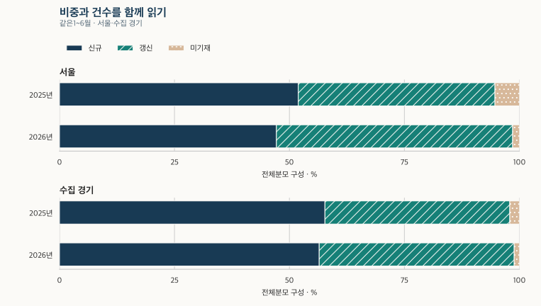
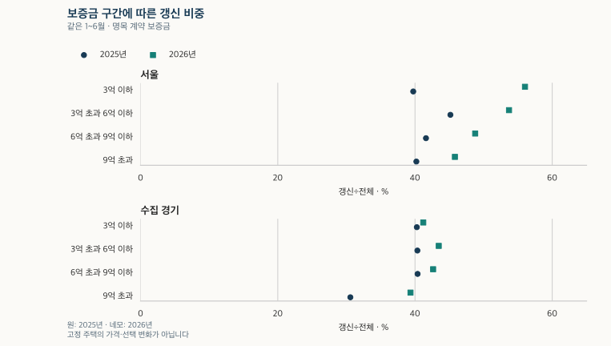

전세와 월세 · 갱신 비중의 분모
전세 갱신 비중, 미기재를 빼면 얼마나 달라질까?
서울·수집 경기의 2021~2026년 아파트 전세 갱신 비중을 전체·기재 분모로 비교합니다. 같은 상반기 건수, 면적·보증금 구간과 미기재의 영향을 확인하고 신규·갱신 가격 비교로 이어갑니다.
분석 기간 · 2021~2026년 · 최근 3개월 잠정 | 자료 기준일 · 2026-10-03 · 과거 수집일 미상 포함
전세 계약에서 갱신은 얼마나 될까요? 2026년 상반기 서울의 관측 아파트 전세 계약에서는 51.4%입니다. 신규·갱신 구분이 적힌 계약만 분모로 삼으면 52.1%로 달라집니다. 수집 경기는 각각 42.4%와 42.9%입니다. 먼저 무엇을 분모로 셌는지 확인하고, 같은 기간과 면적·보증금 구간에서 비교해 보겠습니다.
미기재를 넣느냐에 따라 비중이 달라집니다
갱신은 실거래 자료의 계약 구분에 ‘갱신’이라고 적힌 계약입니다. 갱신요구권 사용 표시가 있는 계약과 그 표시가 비어 있는 갱신 계약을 모두 포함합니다. 갱신 계약 비중과 갱신요구권 사용 비율은 서로 다른 질문입니다. 권리 사용 기재를 읽으려면 갱신요구권의 숫자와 빈칸을 함께 확인하세요.
신규를 N, 갱신을 R, 미기재를 U라고 하면 전체 계약을 분모로 쓴 비중은 R÷(N+R+U), 구분이 적힌 계약만 쓴 비중은 R÷(N+R)입니다. 미기재는 신규로 바꾸지 않습니다. 어느 비중이든 관측하지 못한 계약은 분모에 없습니다.
| 지역 | 신규(건) | 갱신(건) | 미기재(건) | 전체(건) | 갱신÷전체 | 갱신÷기재 | 미기재÷전체 |
|---|---|---|---|---|---|---|---|
| 서울 | 26,662 | 29,033 | 826 | 56,521 | 51.4% | 52.1% | 1.5% |
| 수집 경기 | 41,948 | 31,492 | 838 | 74,278 | 42.4% | 42.9% | 1.1% |
월세가 0이고 보증금이 양수인 적격 아파트 전세 계약입니다. 서울 25개 구·수집 경기 36개 시·구의 현재 보유 자료를 계약월로 집계했습니다. 경기 전체·모든 임대차·고유 세입자의 비율이 아닙니다. 비율은 표의 건수로 계산해 소수 첫째 자리로 표시합니다.
2021년은 신고제 도입을 가로지르는 해입니다
2021년 서울의 갱신 비중은 전체분모에서 22.7%, 기재분모에서 44.2%입니다. 그해에는 미기재 계약이 많아 두 숫자가 멀리 떨어집니다. 이 차이를 지운 채 최근 연도와 비교하면 계약 선택이 달라진 것과 기재가 늘어난 것을 섞게 됩니다.
| 기간 | 지역 | 신규(건) | 갱신(건) | 미기재(건) | 전체(건) | 갱신÷전체 | 갱신÷기재 | 미기재÷전체 |
|---|---|---|---|---|---|---|---|---|
| 2021년 | 서울 | 35,622 | 28,198 | 60,498 | 124,318 | 22.7% | 44.2% | 48.7% |
| 2021년 | 수집 경기 | 59,235 | 30,598 | 71,581 | 161,414 | 19.0% | 34.1% | 44.3% |
| 2022년 | 서울 | 56,413 | 57,960 | 14,979 | 129,352 | 44.8% | 50.7% | 11.6% |
| 2022년 | 수집 경기 | 89,836 | 65,630 | 20,961 | 176,427 | 37.2% | 42.2% | 11.9% |
| 2023년 | 서울 | 91,157 | 44,295 | 12,271 | 147,723 | 30.0% | 32.7% | 8.3% |
| 2023년 | 수집 경기 | 118,466 | 53,499 | 17,609 | 189,574 | 28.2% | 31.1% | 9.3% |
| 2024년 | 서울 | 83,263 | 44,254 | 3,338 | 130,855 | 33.8% | 34.7% | 2.6% |
| 2024년 | 수집 경기 | 112,376 | 55,376 | 5,154 | 172,906 | 32.0% | 33.0% | 3.0% |
| 2025년 | 서울 | 70,937 | 61,592 | 5,966 | 138,495 | 44.5% | 46.5% | 4.3% |
| 2025년 | 수집 경기 | 97,750 | 68,190 | 2,933 | 168,873 | 40.4% | 41.1% | 1.7% |
| 2026년 1~6월 | 서울 | 26,662 | 29,033 | 826 | 56,521 | 51.4% | 52.1% | 1.5% |
| 2026년 1~6월 | 수집 경기 | 41,948 | 31,492 | 838 | 74,278 | 42.4% | 42.9% | 1.1% |
2021년은 1~5월과 6~12월도 따로 보되, 길이와 계절이 다른 두 기간의 건수를 증감률로 비교하지 않습니다. 당시 공식 안내에 따르면 주택 임대차 신고제는 2021년 6월 1일 시작됐습니다. 제도 전후의 실제 계약과 자료 수집 경로가 함께 달라질 수 있으므로, 이 표만으로 제도의 효과를 추정하지 않습니다.
| 기간 | 지역 | 신규(건) | 갱신(건) | 미기재(건) | 전체(건) | 갱신÷전체 | 갱신÷기재 | 미기재÷전체 |
|---|---|---|---|---|---|---|---|---|
| 2021년 1~5월 | 서울 | 1,136 | 457 | 49,442 | 51,035 | 0.9% | 28.7% | 96.9% |
| 2021년 1~5월 | 수집 경기 | 4,399 | 1,062 | 56,409 | 61,870 | 1.7% | 19.4% | 91.2% |
| 2021년 6~12월 | 서울 | 34,486 | 27,741 | 11,056 | 73,283 | 37.9% | 44.6% | 15.1% |
| 2021년 6~12월 | 수집 경기 | 54,836 | 29,536 | 15,172 | 99,544 | 29.7% | 35.0% | 15.2% |
2026년 7~9월은 잠정입니다. 최신 분기의 높은 비중이 그대로 유지될지, 뒤늦게 들어오는 계약의 구성이 어떨지는 아직 알 수 없습니다. 전년 전체와 최근 석 달을 같은 길이의 통계처럼 비교하지 않습니다.
2026년 7~9월 잠정 비중 보기
| 지역 | 신규(건) | 갱신(건) | 미기재(건) | 전체(건) | 갱신÷전체 | 갱신÷기재 | 미기재÷전체 |
|---|---|---|---|---|---|---|---|
| 서울 | 9,110 | 12,203 | 278 | 21,591 | 56.5% | 57.3% | 1.3% |
| 수집 경기 | 14,826 | 14,148 | 313 | 29,287 | 48.3% | 48.8% | 1.1% |
갱신 비중은 올랐지만 갱신 건수는 줄었습니다
2025년과 2026년의 1~6월을 맞추면 서울의 갱신은 31,115건에서 29,033건으로, 신규는 37,785건에서 26,662건으로 줄었습니다. 미기재도 3,862건에서 826건으로 줄었습니다. 전체분모 갱신 비중은 42.8%에서 51.4%로 높아집니다. 비중의 상승만으로 갱신 계약의 절대 건수가 늘었다고 말할 수 없습니다.
| 지역 | 기간 | 신규(건) | 갱신(건) | 미기재(건) | 전체(건) | 갱신÷전체 | 갱신÷기재 | 미기재÷전체 |
|---|---|---|---|---|---|---|---|---|
| 서울 | 2025년 1~6월 | 37,785 | 31,115 | 3,862 | 72,762 | 42.8% | 45.2% | 5.3% |
| 서울 | 2026년 1~6월 | 26,662 | 29,033 | 826 | 56,521 | 51.4% | 52.1% | 1.5% |
| 수집 경기 | 2025년 1~6월 | 51,873 | 36,123 | 1,874 | 89,870 | 40.2% | 41.1% | 2.1% |
| 수집 경기 | 2026년 1~6월 | 41,948 | 31,492 | 838 | 74,278 | 42.4% | 42.9% | 1.1% |
수집 경기에서도 같은 상반기의 갱신 건수는 36,123건에서 31,492건으로 감소했지만, 전체분모 비중은 40.2%에서 42.4%로 높아졌습니다. 두 지역에서 비율과 건수가 다른 방향으로 움직이는 이유를 보려면 신규·갱신·미기재 세 항목을 함께 봐야 합니다. 이 역시 실제 세입자의 선택 변화만을 분리한 결과는 아닙니다.

59형과 84형만 보면 전체보다 높게 보일 수 있습니다
2026년 상반기 서울의 전체분모 갱신 비중은 59형 53.5%, 84형 54.2%, 기타 면적 47.4%입니다. 수집 경기는 각각 43.0%, 44.0%, 40.4%입니다. 익숙한 두 면적만 남기면 전체 면적의 구성을 놓칠 수 있어 기타 면적도 함께 표시했습니다.
| 지역 | 면적 | 신규(건) | 갱신(건) | 미기재(건) | 전체(건) | 갱신÷전체 | 갱신÷기재 | 미기재÷전체 |
|---|---|---|---|---|---|---|---|---|
| 서울 | 59형 | 6,887 | 8,261 | 283 | 15,431 | 53.5% | 54.5% | 1.8% |
| 서울 | 84형 | 8,442 | 10,300 | 272 | 19,014 | 54.2% | 55.0% | 1.4% |
| 서울 | 기타 면적 | 11,333 | 10,472 | 271 | 22,076 | 47.4% | 48.0% | 1.2% |
| 수집 경기 | 59형 | 10,029 | 7,743 | 221 | 17,993 | 43.0% | 43.6% | 1.2% |
| 수집 경기 | 84형 | 15,237 | 12,218 | 294 | 27,749 | 44.0% | 44.5% | 1.1% |
| 수집 경기 | 기타 면적 | 16,682 | 11,531 | 323 | 28,536 | 40.4% | 40.9% | 1.1% |
59형은 기존 전용 17·18평형, 84형은 25·26평형 묶음입니다. 전용면적이 정확히 59㎡·84㎡인 계약만 고른 것이 아닙니다. 면적 묶음은 전용면적과 평형 용어에서 확인할 수 있습니다. 각 면적의 지역·연식·가격대 구성도 다르므로 면적 자체의 갱신 유인으로 해석하지 않습니다.
기존 공개 범위의 연도별·전체 기간 면적 비교
| 기간 | 지역 | 면적 | 신규(건) | 갱신(건) | 미기재(건) | 전체(건) | 갱신÷전체 | 갱신÷기재 | 미기재÷전체 |
|---|---|---|---|---|---|---|---|---|---|
| 2021년 6~12월 | 서울 | 59형 | 8,729 | 6,828 | 2,961 | 18,518 | 36.9% | 43.9% | 16.0% |
| 2021년 6~12월 | 서울 | 84형 | 10,521 | 9,619 | 3,105 | 23,245 | 41.4% | 47.8% | 13.4% |
| 2021년 6~12월 | 서울 | 기타 면적 | 15,236 | 11,294 | 4,990 | 31,520 | 35.8% | 42.6% | 15.8% |
| 2021년 6~12월 | 수집 경기 | 59형 | 13,659 | 7,081 | 3,650 | 24,390 | 29.0% | 34.1% | 15.0% |
| 2021년 6~12월 | 수집 경기 | 84형 | 19,494 | 10,212 | 6,143 | 35,849 | 28.5% | 34.4% | 17.1% |
| 2021년 6~12월 | 수집 경기 | 기타 면적 | 21,683 | 12,243 | 5,379 | 39,305 | 31.1% | 36.1% | 13.7% |
| 2022년 | 서울 | 59형 | 15,973 | 14,206 | 4,472 | 34,651 | 41.0% | 47.1% | 12.9% |
| 2022년 | 서울 | 84형 | 17,036 | 20,160 | 4,200 | 41,396 | 48.7% | 54.2% | 10.1% |
| 2022년 | 서울 | 기타 면적 | 23,404 | 23,594 | 6,307 | 53,305 | 44.3% | 50.2% | 11.8% |
| 2022년 | 수집 경기 | 59형 | 23,426 | 15,491 | 5,115 | 44,032 | 35.2% | 39.8% | 11.6% |
| 2022년 | 수집 경기 | 84형 | 30,971 | 23,601 | 8,769 | 63,341 | 37.3% | 43.2% | 13.8% |
| 2022년 | 수집 경기 | 기타 면적 | 35,439 | 26,538 | 7,077 | 69,054 | 38.4% | 42.8% | 10.2% |
| 2023년 | 서울 | 59형 | 25,410 | 10,566 | 3,553 | 39,529 | 26.7% | 29.4% | 9.0% |
| 2023년 | 서울 | 84형 | 30,407 | 16,244 | 3,683 | 50,334 | 32.3% | 34.8% | 7.3% |
| 2023년 | 서울 | 기타 면적 | 35,340 | 17,485 | 5,035 | 57,860 | 30.2% | 33.1% | 8.7% |
| 2023년 | 수집 경기 | 59형 | 29,789 | 12,004 | 4,220 | 46,013 | 26.1% | 28.7% | 9.2% |
| 2023년 | 수집 경기 | 84형 | 41,942 | 20,109 | 7,806 | 69,857 | 28.8% | 32.4% | 11.2% |
| 2023년 | 수집 경기 | 기타 면적 | 46,735 | 21,386 | 5,583 | 73,704 | 29.0% | 31.4% | 7.6% |
| 2024년 | 서울 | 59형 | 23,877 | 11,231 | 1,110 | 36,218 | 31.0% | 32.0% | 3.1% |
| 2024년 | 서울 | 84형 | 26,907 | 15,765 | 1,016 | 43,688 | 36.1% | 36.9% | 2.3% |
| 2024년 | 서울 | 기타 면적 | 32,479 | 17,258 | 1,212 | 50,949 | 33.9% | 34.7% | 2.4% |
| 2024년 | 수집 경기 | 59형 | 28,960 | 13,548 | 1,357 | 43,865 | 30.9% | 31.9% | 3.1% |
| 2024년 | 수집 경기 | 84형 | 38,999 | 21,754 | 1,994 | 62,747 | 34.7% | 35.8% | 3.2% |
| 2024년 | 수집 경기 | 기타 면적 | 44,417 | 20,074 | 1,803 | 66,294 | 30.3% | 31.1% | 2.7% |
| 2025년 | 서울 | 59형 | 19,086 | 16,265 | 2,632 | 37,983 | 42.8% | 46.0% | 6.9% |
| 2025년 | 서울 | 84형 | 24,360 | 22,440 | 1,547 | 48,347 | 46.4% | 47.9% | 3.2% |
| 2025년 | 서울 | 기타 면적 | 27,491 | 22,887 | 1,787 | 52,165 | 43.9% | 45.4% | 3.4% |
| 2025년 | 수집 경기 | 59형 | 23,737 | 16,426 | 786 | 40,949 | 40.1% | 40.9% | 1.9% |
| 2025년 | 수집 경기 | 84형 | 35,429 | 26,400 | 1,029 | 62,858 | 42.0% | 42.7% | 1.6% |
| 2025년 | 수집 경기 | 기타 면적 | 38,584 | 25,364 | 1,118 | 65,066 | 39.0% | 39.7% | 1.7% |
| 2021년 6월~2026년 6월 | 서울 | 59형 | 99,962 | 67,357 | 15,011 | 182,330 | 36.9% | 40.3% | 8.2% |
| 2021년 6월~2026년 6월 | 서울 | 84형 | 117,673 | 94,528 | 13,823 | 226,024 | 41.8% | 44.5% | 6.1% |
| 2021년 6월~2026년 6월 | 서울 | 기타 면적 | 145,283 | 102,990 | 19,602 | 267,875 | 38.4% | 41.5% | 7.3% |
| 2021년 6월~2026년 6월 | 수집 경기 | 59형 | 129,600 | 72,293 | 15,349 | 217,242 | 33.3% | 35.8% | 7.1% |
| 2021년 6월~2026년 6월 | 수집 경기 | 84형 | 182,072 | 114,294 | 26,035 | 322,401 | 35.5% | 38.6% | 8.1% |
| 2021년 6월~2026년 6월 | 수집 경기 | 기타 면적 | 203,540 | 117,136 | 21,283 | 341,959 | 34.3% | 36.5% | 6.2% |
같은 지역이라도 보증금 구간에 따라 다릅니다
2026년 상반기 서울은 보증금 3억 원 이하의 전체분모 갱신 비중이 56.0%, 9억 원 초과는 45.8%입니다. 수집 경기는 3억 초과 6억 원 이하가 43.5%, 9억 원 초과는 39.3%입니다. 서울의 가격대별 모양을 경기에도 그대로 적용할 수는 없습니다.
| 지역 | 보증금 구간 | 신규(건) | 갱신(건) | 미기재(건) | 전체(건) | 갱신÷전체 | 갱신÷기재 | 미기재÷전체 |
|---|---|---|---|---|---|---|---|---|
| 서울 | 3억 원 이하 | 3,512 | 4,639 | 129 | 8,280 | 56.0% | 56.9% | 1.6% |
| 서울 | 3억 초과 6억 이하 | 10,127 | 12,199 | 391 | 22,717 | 53.7% | 54.6% | 1.7% |
| 서울 | 6억 초과 9억 이하 | 8,456 | 8,276 | 238 | 16,970 | 48.8% | 49.5% | 1.4% |
| 서울 | 9억 원 초과 | 4,567 | 3,919 | 68 | 8,554 | 45.8% | 46.2% | 0.8% |
| 수집 경기 | 3억 원 이하 | 16,971 | 12,141 | 355 | 29,467 | 41.2% | 41.7% | 1.2% |
| 수집 경기 | 3억 초과 6억 이하 | 19,583 | 15,348 | 386 | 35,317 | 43.5% | 43.9% | 1.1% |
| 수집 경기 | 6억 초과 9억 이하 | 4,579 | 3,466 | 84 | 8,129 | 42.6% | 43.1% | 1.0% |
| 수집 경기 | 9억 원 초과 | 815 | 537 | 13 | 1,365 | 39.3% | 39.7% | 1.0% |
구간은 명목 계약 보증금의 3억·6억·9억 원 경계로 나눴습니다. 경계 금액은 낮은 구간에 들어갑니다. 예를 들어 6억 원은 ‘3억 초과 6억 이하’입니다. 같은 집도 보증금이 바뀌면 구간을 옮길 수 있으며, 큰 집과 비싼 지역의 작은 집이 같은 구간에 들어갈 수도 있습니다.

가격 구간의 차이는 협상력이나 이사를 싫어하는 정도의 측정값이 아닙니다. 입지·면적·연식·신규 계약의 가격과 기재 누락이 함께 작용할 수 있습니다. 갱신 보증금은 증액분이 아니라 계약의 전체 보증금입니다. 아래에는 완결 연도와 같은 상반기, 전체 주기간의 모든 가격 구간을 남겼습니다.
2022~2025년·같은 상반기·전체 기간의 가격대별 비교
| 기간 | 지역 | 보증금 구간 | 신규(건) | 갱신(건) | 미기재(건) | 전체(건) | 갱신÷전체 | 갱신÷기재 | 미기재÷전체 |
|---|---|---|---|---|---|---|---|---|---|
| 2022년 | 서울 | 3억 원 이하 | 13,475 | 10,972 | 5,867 | 30,314 | 36.2% | 44.9% | 19.4% |
| 2022년 | 서울 | 3억 초과 6억 이하 | 24,216 | 28,510 | 6,194 | 58,920 | 48.4% | 54.1% | 10.5% |
| 2022년 | 서울 | 6억 초과 9억 이하 | 12,624 | 12,630 | 2,153 | 27,407 | 46.1% | 50.0% | 7.9% |
| 2022년 | 서울 | 9억 원 초과 | 6,098 | 5,848 | 765 | 12,711 | 46.0% | 49.0% | 6.0% |
| 2022년 | 수집 경기 | 3억 원 이하 | 41,517 | 32,597 | 13,787 | 87,901 | 37.1% | 44.0% | 15.7% |
| 2022년 | 수집 경기 | 3억 초과 6억 이하 | 41,082 | 28,144 | 6,178 | 75,404 | 37.3% | 40.7% | 8.2% |
| 2022년 | 수집 경기 | 6억 초과 9억 이하 | 6,125 | 4,279 | 868 | 11,272 | 38.0% | 41.1% | 7.7% |
| 2022년 | 수집 경기 | 9억 원 초과 | 1,112 | 610 | 128 | 1,850 | 33.0% | 35.4% | 6.9% |
| 2023년 | 서울 | 3억 원 이하 | 20,091 | 7,299 | 4,631 | 32,021 | 22.8% | 26.6% | 14.5% |
| 2023년 | 서울 | 3억 초과 6억 이하 | 44,803 | 22,206 | 5,379 | 72,388 | 30.7% | 33.1% | 7.4% |
| 2023년 | 서울 | 6억 초과 9억 이하 | 17,226 | 10,165 | 1,672 | 29,063 | 35.0% | 37.1% | 5.8% |
| 2023년 | 서울 | 9억 원 초과 | 9,037 | 4,625 | 589 | 14,251 | 32.5% | 33.9% | 4.1% |
| 2023년 | 수집 경기 | 3억 원 이하 | 65,570 | 24,866 | 12,118 | 102,554 | 24.2% | 27.5% | 11.8% |
| 2023년 | 수집 경기 | 3억 초과 6억 이하 | 45,903 | 24,033 | 4,871 | 74,807 | 32.1% | 34.4% | 6.5% |
| 2023년 | 수집 경기 | 6억 초과 9억 이하 | 6,143 | 4,048 | 547 | 10,738 | 37.7% | 39.7% | 5.1% |
| 2023년 | 수집 경기 | 9억 원 초과 | 850 | 552 | 73 | 1,475 | 37.4% | 39.4% | 4.9% |
| 2024년 | 서울 | 3억 원 이하 | 16,644 | 7,827 | 741 | 25,212 | 31.0% | 32.0% | 2.9% |
| 2024년 | 서울 | 3억 초과 6억 이하 | 36,835 | 19,932 | 1,646 | 58,413 | 34.1% | 35.1% | 2.8% |
| 2024년 | 서울 | 6억 초과 9억 이하 | 20,066 | 11,190 | 755 | 32,011 | 35.0% | 35.8% | 2.4% |
| 2024년 | 서울 | 9억 원 초과 | 9,718 | 5,305 | 196 | 15,219 | 34.9% | 35.3% | 1.3% |
| 2024년 | 수집 경기 | 3억 원 이하 | 55,496 | 26,149 | 2,737 | 84,382 | 31.0% | 32.0% | 3.2% |
| 2024년 | 수집 경기 | 3억 초과 6억 이하 | 48,072 | 24,388 | 2,102 | 74,562 | 32.7% | 33.7% | 2.8% |
| 2024년 | 수집 경기 | 6억 초과 9억 이하 | 7,632 | 4,231 | 285 | 12,148 | 34.8% | 35.7% | 2.3% |
| 2024년 | 수집 경기 | 9억 원 초과 | 1,176 | 608 | 30 | 1,814 | 33.5% | 34.1% | 1.7% |
| 2025년 | 서울 | 3억 원 이하 | 9,842 | 9,539 | 2,696 | 22,077 | 43.2% | 49.2% | 12.2% |
| 2025년 | 서울 | 3억 초과 6억 이하 | 29,987 | 28,401 | 2,420 | 60,808 | 46.7% | 48.6% | 4.0% |
| 2025년 | 서울 | 6억 초과 9억 이하 | 20,637 | 15,710 | 668 | 37,015 | 42.4% | 43.2% | 1.8% |
| 2025년 | 서울 | 9억 원 초과 | 10,471 | 7,942 | 182 | 18,595 | 42.7% | 43.1% | 1.0% |
| 2025년 | 수집 경기 | 3억 원 이하 | 42,124 | 30,090 | 1,387 | 73,601 | 40.9% | 41.7% | 1.9% |
| 2025년 | 수집 경기 | 3억 초과 6억 이하 | 45,347 | 31,400 | 1,319 | 78,066 | 40.2% | 40.9% | 1.7% |
| 2025년 | 수집 경기 | 6억 초과 9억 이하 | 8,651 | 5,845 | 196 | 14,692 | 39.8% | 40.3% | 1.3% |
| 2025년 | 수집 경기 | 9억 원 초과 | 1,628 | 855 | 31 | 2,514 | 34.0% | 34.4% | 1.2% |
| 2025년 1~6월 | 서울 | 3억 원 이하 | 5,553 | 4,815 | 1,748 | 12,116 | 39.7% | 46.4% | 14.4% |
| 2025년 1~6월 | 서울 | 3억 초과 6억 이하 | 16,771 | 15,138 | 1,613 | 33,522 | 45.2% | 47.4% | 4.8% |
| 2025년 1~6월 | 서울 | 6억 초과 9억 이하 | 10,401 | 7,689 | 394 | 18,484 | 41.6% | 42.5% | 2.1% |
| 2025년 1~6월 | 서울 | 9억 원 초과 | 5,060 | 3,473 | 107 | 8,640 | 40.2% | 40.7% | 1.2% |
| 2025년 1~6월 | 수집 경기 | 3억 원 이하 | 23,675 | 16,573 | 910 | 41,158 | 40.3% | 41.2% | 2.2% |
| 2025년 1~6월 | 수집 경기 | 3억 초과 6억 이하 | 23,598 | 16,519 | 824 | 40,941 | 40.3% | 41.2% | 2.0% |
| 2025년 1~6월 | 수집 경기 | 6억 초과 9억 이하 | 3,860 | 2,698 | 124 | 6,682 | 40.4% | 41.1% | 1.9% |
| 2025년 1~6월 | 수집 경기 | 9억 원 초과 | 740 | 333 | 16 | 1,089 | 30.6% | 31.0% | 1.5% |
| 2021년 6월~2026년 6월 | 서울 | 3억 원 이하 | 70,615 | 45,898 | 18,474 | 134,987 | 34.0% | 39.4% | 13.7% |
| 2021년 6월~2026년 6월 | 서울 | 3억 초과 6억 이하 | 159,340 | 125,904 | 20,464 | 305,708 | 41.2% | 44.1% | 6.7% |
| 2021년 6월~2026년 6월 | 서울 | 6억 초과 9억 이하 | 87,789 | 63,117 | 7,033 | 157,939 | 40.0% | 41.8% | 4.5% |
| 2021년 6월~2026년 6월 | 서울 | 9억 원 초과 | 45,174 | 29,956 | 2,465 | 77,595 | 38.6% | 39.9% | 3.2% |
| 2021년 6월~2026년 6월 | 수집 경기 | 3억 원 이하 | 241,072 | 142,844 | 39,723 | 423,639 | 33.7% | 37.2% | 9.4% |
| 2021년 6월~2026년 6월 | 수집 경기 | 3억 초과 6억 이하 | 227,986 | 134,357 | 19,768 | 382,111 | 35.2% | 37.1% | 5.2% |
| 2021년 6월~2026년 6월 | 수집 경기 | 6억 초과 9억 이하 | 39,449 | 23,184 | 2,753 | 65,386 | 35.5% | 37.0% | 4.2% |
| 2021년 6월~2026년 6월 | 수집 경기 | 9억 원 초과 | 6,705 | 3,338 | 423 | 10,466 | 31.9% | 33.2% | 4.0% |
미기재를 전부 갱신으로 가정하면 어디까지 달라질까요?
미기재가 전부 신규라면 갱신 비중은 R÷T, 전부 갱신이라면 (R+U)÷T입니다. T는 신규·갱신·미기재의 합입니다. 실제 갱신이 그 사이에 있다고 말할 수 있는 범위도 지금 관측한 계약 안에서만 성립합니다. 자료에 없는 계약까지 포함한 모집단의 신뢰구간은 아닙니다.
| 기간 | 지역 | 미기재(건) | 모두 신규 가정 | 모두 갱신 가정 | 기재분모 비중 | 두 분모 차이 |
|---|---|---|---|---|---|---|
| 2021년 | 서울 | 60,498 | 22.7% | 71.3% | 44.2% | 21.5%p |
| 2021년 | 수집 경기 | 71,581 | 19.0% | 63.3% | 34.1% | 15.1%p |
| 2021년 6월~2026년 6월 | 서울 | 48,436 | 39.2% | 46.3% | 42.2% | 3.0%p |
| 2021년 6월~2026년 6월 | 수집 경기 | 62,667 | 34.5% | 41.6% | 37.1% | 2.6%p |
| 2026년 1~6월 | 서울 | 826 | 51.4% | 52.8% | 52.1% | 0.8%p |
| 2026년 1~6월 | 수집 경기 | 838 | 42.4% | 43.5% | 42.9% | 0.5%p |
기재분모 비중은 미기재가 없다는 가정도, 미기재의 실제 갱신 비중을 알아냈다는 뜻도 아닙니다. 구분이 적힌 부분집합만의 값입니다. 미기재 구성이 기재 계약과 다르면 이 값이 전체 임대차를 대표하지 못합니다.
필드의 시작과 오래된 계약의 기재는 다릅니다
국토부 전월세 FAQ는 신고제를 통해 계약기간·신규/갱신 등의 항목이 추가된 경위를 설명합니다. 그렇다고 현재 내려받은 과거 계약의 해당 필드가 모두 빈칸이라고 단정할 수는 없습니다. 기존 공개 집계에는 2011~2020년 계약에도 신규·갱신 기재가 남아 있습니다. 계약연도는 그 필드가 처음 제공된 연도나 당시 알 수 있었던 정보의 시점이 아닙니다.
기존 공개 2011~2020년 전세 유형 기재값
| 계약연도 | 지역 | 신규(건) | 갱신(건) | 미기재(건) | 전체(건) | 갱신÷전체 | 갱신÷기재 | 미기재÷전체 |
|---|---|---|---|---|---|---|---|---|
| 2011년 | 서울 | 3,246 | 750 | 117,381 | 121,377 | 0.6% | 18.8% | 96.7% |
| 2012년 | 서울 | 3,343 | 847 | 121,326 | 125,516 | 0.7% | 20.2% | 96.7% |
| 2013년 | 서울 | 3,026 | 655 | 108,721 | 112,402 | 0.6% | 17.8% | 96.7% |
| 2014년 | 서울 | 3,187 | 816 | 118,791 | 122,794 | 0.7% | 20.4% | 96.7% |
| 2015년 | 서울 | 2,807 | 631 | 98,574 | 102,012 | 0.6% | 18.4% | 96.6% |
| 2016년 | 서울 | 3,498 | 618 | 97,328 | 101,444 | 0.6% | 15.0% | 95.9% |
| 2017년 | 서울 | 4,743 | 606 | 99,498 | 104,847 | 0.6% | 11.3% | 94.9% |
| 2018년 | 서울 | 3,756 | 506 | 113,698 | 117,960 | 0.4% | 11.9% | 96.4% |
| 2019년 | 서울 | 4,982 | 488 | 118,977 | 124,447 | 0.4% | 8.9% | 95.6% |
| 2020년 | 서울 | 4,082 | 724 | 123,746 | 128,552 | 0.6% | 15.1% | 96.3% |
| 2011년 | 수집 경기 | 13,504 | 2,659 | 104,963 | 121,126 | 2.2% | 16.5% | 86.7% |
| 2012년 | 수집 경기 | 13,062 | 2,676 | 112,907 | 128,645 | 2.1% | 17.0% | 87.8% |
| 2013년 | 수집 경기 | 11,429 | 2,300 | 96,453 | 110,182 | 2.1% | 16.8% | 87.5% |
| 2014년 | 수집 경기 | 10,070 | 2,300 | 109,230 | 121,600 | 1.9% | 18.6% | 89.8% |
| 2015년 | 수집 경기 | 8,288 | 2,066 | 95,523 | 105,877 | 2.0% | 20.0% | 90.2% |
| 2016년 | 수집 경기 | 8,622 | 1,745 | 98,366 | 108,733 | 1.6% | 16.8% | 90.5% |
| 2017년 | 수집 경기 | 8,170 | 1,534 | 98,045 | 107,749 | 1.4% | 15.8% | 91.0% |
| 2018년 | 수집 경기 | 9,411 | 955 | 113,685 | 124,051 | 0.8% | 9.2% | 91.6% |
| 2019년 | 수집 경기 | 10,113 | 995 | 122,718 | 133,826 | 0.7% | 9.0% | 91.7% |
| 2020년 | 수집 경기 | 11,842 | 1,472 | 136,698 | 150,012 | 1.0% | 11.1% | 91.1% |
전월세 API는 임대차 신고와 확정일자 자료를 바탕으로 합니다. 2021년 시행 당시 안내에서 금액이 변하지 않은 갱신과 묵시적 갱신은 신고 대상에서 제외됐습니다. 신고 범위와 확정일자 취득 경로, 뒤늦은 정정 때문에 실제 존재하는 모든 갱신이 여기 들어온다고 할 수 없습니다. 신고제 전후 통계의 단절도 함께 확인하세요.
가장 강한 반론은 실제 갱신 선택이 같아도 기재율과 관측 경로가 바뀌면 비중이 달라진다는 것입니다. 실제 갱신을 원했지만 못한 가구, 같은 집에 계속 사는 가구의 선택도 이 표로 식별하지 못합니다. 호수 식별자가 없어 고유 주택·가구를 추적하지 않으며, 전월세 원천에 없는 해제나 토지임대부 표식을 완전히 판별했다고도 하지 않습니다.
원문에서 보존된 계약기간 충돌을 빼는 민감도도 확인했습니다. 아래의 전체 주기간 비교는 기존 공개 범위입니다. 이는 어떤 기록을 남길지에 따른 민감도이며 실제 고유 주택의 중복을 완전히 제거한 결과는 아닙니다.
| 지역 | 조건 | 신규(건) | 갱신(건) | 미기재(건) | 전체(건) | 갱신÷전체 | 갱신÷기재 | 미기재÷전체 |
|---|---|---|---|---|---|---|---|---|
| 서울 | 기본 | 362,918 | 264,875 | 48,436 | 676,229 | 39.2% | 42.2% | 7.2% |
| 서울 | 기간충돌 제외 | 358,332 | 263,571 | 47,696 | 669,599 | 39.4% | 42.4% | 7.1% |
| 수집 경기 | 기본 | 515,212 | 303,723 | 62,667 | 881,602 | 34.5% | 37.1% | 7.1% |
| 수집 경기 | 기간충돌 제외 | 507,186 | 301,629 | 61,636 | 870,451 | 34.7% | 37.3% | 7.1% |
내 계약을 판단할 때는 비중 다음에 가격을 봅니다
- 분모 확인: 모든 관측 전세 계약인지, 신규·갱신 기재 계약만인지 확인합니다.
- 기간 확인: 같은 1~6월처럼 달력을 맞추고 최근 잠정 기간을 구분합니다.
- 조건 확인: 내 지역·면적·보증금 구간과 전체 평균을 나란히 봅니다. 면적과 보증금 구간을 동시에 맞춘 표가 아니라는 한계도 기억합니다.
- 가격 확인: 갱신이 많다는 사실만으로 제안받은 보증금이 유리하다고 판단하지 않습니다. 같은 조건의 신규·갱신 가격과 실제 매물을 확인합니다.
이 글의 비중은 계약 구성에 대한 질문에 답합니다. 갱신할지 이사할지는 거주 계획, 실제 제안받은 금액, 옮길 집의 조건에 따라 달라집니다. 신규와 갱신 전세의 가격 비교는 이 다음 질문을 다룹니다.
자료·계산·검증 범위
- 기준: 2026년 9월 계약분까지 보유한 현재 보유 자료. 주 비교는 2026년 6월까지이며 7~9월은 잠정입니다. 최초 신고일 기준이나 과거 시점의 정보집합이 아닙니다.
- 원천 병합 후 기존 적격과 계약 구분을 유지합니다. 원문 행 수로 가중하지 않고 미기재를 신규로 바꾸지 않습니다. 단지 연결 여부만으로 추가 제외하지 않습니다.
- 기존 집계와 별도로 원문 금액·유형·구간을 다시 읽고 계산해 대조했습니다. 기존 공개 유형·면적 수와 새 가격별 유형 수, 공개된 과거 기재값을 구분해 검토했습니다.
- 비율은 공개 건수에서만 계산합니다. 분모 0은 계산하지 않습니다. 미기재 배정 범위와 기재분모 비중은 다른 의미입니다.
- 개별 계약·단지 식별자나 세부 금액은 제공하지 않습니다. 공개 수치의 결합 검토는 정해진 필드 범위에 한정되며 모든 외부 정보에 대한 보증이 아닙니다.
공식 발표 통계가 아닌 보유 원천의 자체 집계입니다. 공개 집계 파일(JSON)에서 표의 값과 분모를 확인할 수 있습니다.
공식 출처 확인일: 2026-10-17.
분석·집필: 파파펭귄 (Nobot Kang). 에이전트로 계산·근거 대조·초안 검토를 보조했습니다.